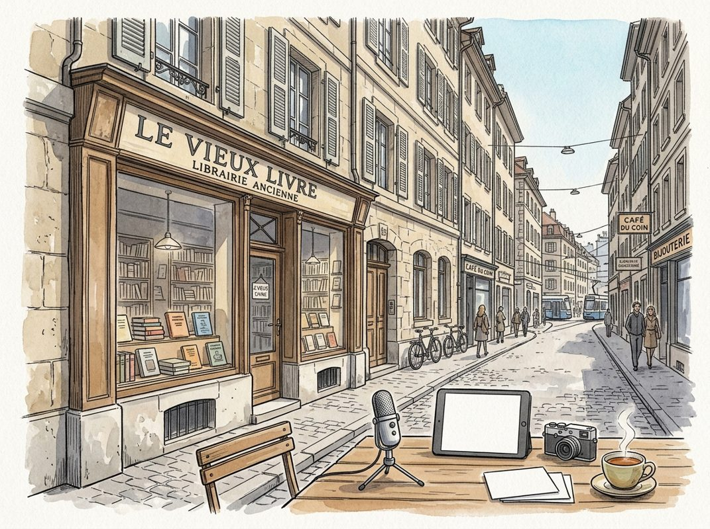

11/8

播客简报 2026-11-08
今日更新
Midterm Blood Bath, $4T AI Sell Off, Data Center Freeze, What's Next for Trump
来源：All-In with Chamath, Jason, Sacks & Friedberg
状态：已读完整音频 transcript
这期播客深入剖析了美国中期选举共和党惨败的原因，揭示了经济不平等和民众对生活成本的普遍不满如何超越传统政治意识形态，预示着未来“经济民粹主义”将成为政治主旋律。适合关注美国政治、经济趋势及科技大佬观点的中文读者。
- 引言：中期选举的“血洗”与播客的独特视角：播客开篇即指出，本期将对中期选举结果进行“验尸”，并探讨特朗普未来两年的走向以及AI行业可能面临的挑战。主持人Jason Calacanis强调，他们团队的选举夜直播吸引了50万观众，超过多数有线电视媒体，显示了“科技大佬热议”的独特吸引力。本期讨论的核心是共和党在中期选举中遭遇的“血洗式”惨败，民主党不仅横扫国会两院，还赢得了至少29个州长席位，甚至在传统深红州也取得了突破。共和党在所有选民群体中都失去了支持，包括白人男性，这与特朗普两年前在这些州的压倒性胜利形成鲜明对比。这种出人意料的失利，促使主持人深入探讨其深层原因和对未来政治格局的影响。
- 共和党惨败：原因何在？：David Sacks认为，共和党惨败的主要原因是“伊朗战争”及其带来的经济后果。他指出，战前汽油价格约为3美元，战后飙升至4美元以上，柴油价格更高，进而推高了食品和运输成本。通货膨胀率从战前的2.4%上升到3.7%，导致抵押贷款利率高达7.5%。尽管就业数据强劲（失业率4.1%，GDP增长稳健），但民众对“负担能力”的担忧压倒了这些积极信号。Sacks强调，战争还分裂了共和党内部，特别是失去了“播客兄弟”等年轻男性选民的支持，他们通过另类媒体获取信息，对战争持反对态度，并在选举中投下抗议票。他认为，如果选举发生在战前，共和党本会表现更好。
- 经济脱钩：富者愈富，工薪阶层挣扎：Chamath Palihapitiya承认自己对选举结果判断失误，并提出一个核心观点：自新冠疫情以来，美国经济已“完全脱离现实并崩溃”，传统政治意识形态（民主党或共和党）已不再重要。他认为，一小部分“资产所有者”（如播客主持人及其朋友）在任何经济条件下都能积累财富，而广大的“工薪阶层”却面临结构性困境。他用数据支撑此论：政治献金和选区划分（gerrymandering）等传统意识形态工具在此次选举中均告失败，反而那些关注“负担能力”和“经济公平”的中间派候选人获得了胜利。Chamath总结道，美国社会正在呼吁经济原则的“重置”，未来的政治舞台将属于那些能提出“经济民粹主义”纲领的候选人。
- 政府效率与“社会主义”思潮的崛起：David Friedberg从政府支出的角度分析了经济困境。他回忆了特朗普政府初期旨在提高政府效率、削减开支的“DODGE”计划。然而，他发现国会议员对削减政府开支毫无兴趣，导致该计划最终失败。他认为，政府支出占GDP比重过高，导致物价上涨，使得普通民众难以改善生活。当人们感觉自己没有进步时，就会认为“经济增长”和“股市上涨”的红利被少数人（如AI行业的“科技寡头”）独占，从而更容易接受“社会主义”原则和政策。他指出，美国民众对AI的乐观程度远低于中国，排名倒数第四，这进一步加剧了对“寡头”受益的担忧。
- 特朗普的“失误清单”与民意转向：Jason Calacanis则认为，特朗普的民意下滑并非仅仅始于战争，而是贯穿其任期的一系列“混乱”执行和政策失误。他引用Nate Silver的数据图表，指出特朗普的净支持率从上任初期的+5%跌至任期结束时的-28%。Jason列举了几个关键事件：2025年4月的“解放日”关税政策导致通胀飙升，未能平衡预算；2025年夏季的ICE（移民与海关执法局）执法行动过于粗暴，引发民众反感；以及“爱泼斯坦档案”事件，导致他失去了“播客兄弟”等年轻选民的支持。Jason强调，特朗普的“2.0议程”被这些“分心”事件所抛弃，未能让普通民众感受到他是在为他们工作，最终导致了选民的背弃。
Building a $250B Cybersecurity Giant | Nikesh Arora, Palo Alto Networks
来源：David-Senra
原链接：https://www.davidsenra.com/episode/nikesh-arora
状态：已读网页 transcript
这期播客深入探讨了Palo Alto Networks董事长兼CEO Nikesh Arora如何将一家180亿美元的防火墙公司，通过一系列大胆而精明的并购，转型为市值2500亿美元的网络安全巨头。对于希望了解企业级公司如何通过战略性并购实现指数级增长、以及如何有效整合被收购团队和创始人的创业者、CEO和M&A专业人士来说，这期节目提供了宝贵的实战经验和深刻洞察。
- 从单一防火墙到2500亿美元巨头：Palo Alto Networks的转型之路：Nikesh Arora于2018年加入Palo Alto Networks时，公司市值180亿美元，主要业务是防火墙。他意识到，要将公司发展成千亿级巨头，必须突破单一产品模式。他的核心洞察源于对企业级公司利润表的分析：研发投入通常占15-18%，行政开支占6-10%，而销售、营销和客户支持则占据了运营成本的大头。如果能将这部分成本从60%降至20%，就能实现40%的运营利润率。实现这一目标的关键在于摊薄客户获取成本，即向同一客户销售更多产品。大型企业级公司如微软和Salesforce的成功经验表明，它们能向客户提供多样化的产品。因此，Palo Alto Networks必须从仅销售一种产品，转变为拥有丰富产品线的“卡车”，满足客户多样化的网络安全需求，从而提升客户生命周期价值，实现规模化增长。
- 战略性并购：加速产品线扩张的秘密武器：Nikesh深知，自研一款优秀的技术产品通常需要四到七年时间，这对于快速扩张产品线来说太慢了。因此，并购成为实现战略目标的关键机制。但他强调，并购并非没有风险，历史上充斥着失败的案例。他通过研究大量并购案例，总结出失败的七大原因，并致力于规避这些风险。其中一个重要原则是：只收购行业内排名第一或第二的公司。他认为，在大多数市场中，前两名公司会占据不成比例的利润份额，而第三名往往难以望其项背。购买排名靠后的公司，不仅难以超越现有领导者，还可能因大公司内部的官僚和整合问题而拖慢其发展。他坚信，与其试图“修补”一个表现不佳的资产，不如直接投资于已经证明其市场领导地位的团队和产品。
- 独特的并购谈判与整合哲学：为了确保并购成功，Nikesh发展了一套独特的谈判和整合流程。首先，他坚持直接与创始人谈判，而非通过银行家，因为他认为创始人将是未来四年的同事，直接沟通有助于建立信任和明确预期。其次，也是最关键的一点，他会在交易正式签署前，要求创始人在30天内与Palo Alto Networks的产品团队共同制定一份联合产品路线图。如果创始人不愿或无法与公司愿景对齐，他宁愿放弃交易。他发现，在巨额支票的诱惑下，创始人在交易完成前更容易接受产品愿景的调整。这种前置的整合策略，有效避免了交易完成后因产品方向分歧而导致的摩擦和失败。此外，Palo Alto Networks通常会要求创始人留任三到四年，并对他们进行再投资，以确保产品愿景的连续性和执行力，因为他们购买的不仅仅是技术，更是团队、愿景和执行力。
- 驾驭“赢家心态”：被收购创始人的整合挑战：Nikesh指出，许多成功的小公司之所以能脱颖而出，很大程度上归因于创始人强大的意志力，他们是“Alpha杀手”，不惜一切代价追求胜利。然而，这种“赢家心态”在被大公司收购后，也可能成为整合的挑战。创始人需要调整心态，从“弱者”变为“强者”的一部分，学会利用大公司的资源（如6000名销售人员），而非将其视为障碍。如果创始人无法适应这种转变，可能会与现有团队产生摩擦，甚至导致其离开，从而损害被收购资产的价值。因此，在评估并购对象时，Nikesh不仅关注产品和市场地位，还会深入考察创始人的领导风格和适应能力，判断他们是否能在Palo Alto Networks的生态系统中成功发展。他强调，公司购买的是一个运作良好、有凝聚力的团队，这个团队必须能够在大平台下继续发挥其优势。
- 评估并购时机与价值：不为小钱纠结：并购的时机、价格和信念是相互关联的。Nikesh承认，有时公司可能会过早地收购某个产品，就像Palo Alto Networks曾收购Evident.io，但后来又收购了更成熟的RedLock。关键在于一旦发现方向错误，要迅速止损。面对当前高估值的市场环境，他认为并购的价值判断不应拘泥于短期价格波动。他引用了Egon Durban（Silver Lake合伙人）的观点：如果一个资产具有巨大的战略价值，多付几百万甚至几亿美元并不重要，因为最终目标是将其培育成数十亿美元的资产。就像他们一起竞拍伦敦板球队的经历，Egon鼓励Nikesh不要为眼前的价格纠结，而是着眼于长期的成功或失败。对于Palo Alto Networks这样的巨头来说，其目标是购买那些在未来5-10年内能为其带来50-100亿美元价值的资产，因此，短期的几亿美元差价在长期看来微不足道。
历史精选
Adapting Episode 1: Canlis
来源：Acquired
状态：已读音频详细听记
这期播客在新冠疫情的特殊背景下，通过西雅图顶级餐厅Canlis的案例，深刻展现了企业在极端危机中如何进行颠覆性适应和领导力转型，对于所有面临不确定性的商业领导者和创业者都极具启发意义。
- 疫情下的转型与“Adapting”系列诞生：2020年初，全球正经历新冠疫情带来的巨大变革与动荡，社会经济和日常生活都受到前所未有的冲击。在这样的背景下，知名商业播客《Acquired》的主持人Ben和David认为，继续“一切照旧”是不负责任的。他们果断暂停了常规的节目内容，推出了一个名为“Adapting”（适应）的全新系列。这个新系列的核心目标是探讨在历史性变革时刻，领导者如何展现适应能力。节目将不再像以往那样对公司进行“评分”，而是聚焦于企业如何应对当下和展望未来，因为在适应过程中，任何敢于冒险和展现真我的尝试都值得肯定。同时，播客社区也进行了调整，推出了LP会员专属的线上交流活动，以更好地连接和支持听众，体现了节目自身在危机中的适应与创新。
- 赞助商ServiceNow：企业AI的运营骨干：本期节目的长期赞助商ServiceNow，在开场环节介绍了其在企业运营中的关键作用。主持人指出，许多企业高管可能不清楚其业务中实际运行着多少自动化代理（agents）。ServiceNow提供的“超级智能控制塔”能够全面监控、保护、衡量并管理企业内部的代理、模型和工作流程，无论这些工具由谁构建。例如，它能发现采购部门自行开发的代理，追踪其活动和成本，并为CFO提供投资回报率数据。ServiceNow的独特之处在于，他们花费了二十年时间构建了涵盖IT、HR、销售、服务和网络安全的企业“运营骨干”，每年支持超过1000亿次工作流，服务于90%以上的财富500强公司。这表明，即使在危机中，高效的运营管理和对新技术的适应（如AI）对企业生存至关重要。
- Canlis：一家传奇餐厅的家族传承：本期节目的焦点是西雅图的顶级餐厅Canlis，一个《Acquired》节目从未涉足的领域。Canlis餐厅由Mark Canlis和他的兄弟Brian共同经营，是拥有近百年烹饪历史的四代家族企业。Mark的祖父Peter Canlis在二战后曾为泰迪·罗斯福做厨师，并于1950年在西雅图创立了Canlis。Mark本人毕业于康奈尔大学，并在空军特种作战部队服役，与兄弟Brian（海军服役）一同继承了家族的军事传统。Mark于2003年加入餐厅后，成功领导了品牌的现代化和代际传承，使Canlis成为美国最顶级的家族企业之一，赢得了《Food & Wine》杂志“过去40年最重要的40家餐厅之一”的赞誉，并连续22次获得“Wine Spectator Grand Awards”，以及3个James Beard Award。这家餐厅不仅是美食地标，更是许多西雅图人心中的特殊回忆。
- 疫情冲击下的艰难抉择：作为一家以精致餐饮体验著称的顶级餐厅，Canlis在新冠疫情中面临着前所未有的巨大挑战。餐饮业是受疫情打击最严重的行业之一，而高端餐饮更是首当其冲。Canlis的运营模式依赖于面对面的服务、精致的用餐环境和高昂的食材成本，这些在封锁和社交距离限制下都变得不可持续。维持一家拥有众多员工和高运营成本的餐厅，同时又无法提供其核心的奢华体验，使得Canlis必须迅速做出艰难的抉择。传统的经营模式已无法维系，摆在Mark和Brian面前的是两条路：要么暂时关闭，等待疫情过去，但这意味着员工失业和巨大的财务压力；要么彻底颠覆自我，寻找新的生存之道。
- 从米其林到汉堡：Canlis的颠覆性适应：面对危机，Mark Canlis展现了非凡的领导力和适应精神。他没有选择坐以待毙，而是迅速将Canlis转型为一家提供外卖和送餐服务的餐厅。最令人惊讶的是，这家以精致菜肴闻名的餐厅，竟然开始提供汉堡和百吉饼等大众化食品。Mark在《西雅图时报》上掷地有声地表示：“是的，我们能做到！我们将用汉堡和百吉饼来做。”这一大胆的举动，不仅挽救了员工的就业岗位，也确保了餐厅在艰难时期的业务持续性。这种从高端餐饮到平价外卖的巨大转变，体现了在极端环境下，企业领导者为了生存和员工福祉，可以放下身段，彻底颠覆原有商业模式的勇气和决心。
The Coca-Cola Company - [Business Breakdowns, EP.136]
来源：Business Breakdowns
原链接：https://joincolossus.com/episodes/66368472/lait-the-coca-cola-company
状态：已读网页 transcript
这期播客深入剖析了可口可乐公司百年基业长青的秘密，揭示了其独特的商业模式、品牌护城河、分销策略和持续创新能力。对于希望理解消费品巨头如何维持市场主导地位、实现长期增长的投资者和商业爱好者来说，这是一份极具价值的深度分析。
- 独特的商业模式：品牌与分销的巧妙结合：可口可乐公司（Coca-Cola）的商业模式独树一帜，它并非一家传统的饮料生产商，而是一个强大的品牌所有者和浓缩液供应商。公司将生产、装瓶和分销等重资产业务，通过特许经营模式授权给全球数千家独立的装瓶合作伙伴。这种“轻资产”策略使得可口可乐能够专注于品牌建设、配方研发、市场营销和全球战略规划，同时利用独立装瓶商的本地化优势，构建起一个无与伦比的全球分销网络。这种模式不仅降低了公司的资本支出，提高了资产回报率，也为其带来了强大的竞争护城河。
- 从药房到全球：可口可乐的品牌演进与规模优势：可口可乐的历史始于1886年，由约翰·彭伯顿博士在亚特兰大的一家药房首次推出，最初每杯售价5美分。如今，它已发展成为一个全球性的饮料巨头，每天提供超过19亿份饮品。这种惊人的规模和品牌渗透力，使其在与竞争对手（如百事可乐）的较量中，始终保持着领先地位。可口可乐不仅仅是一种饮料，更是一种文化符号，其品牌价值和消费者认知度是其最核心的资产。这种强大的品牌影响力，使得公司在定价、市场推广和新产品推出方面拥有巨大的优势。
- 装瓶业务的战略性再特许经营：在公司发展早期，可口可乐曾拥有并运营大量的装瓶厂。然而，为了优化资本结构和提升运营效率，公司在过去几十年中逐步实施了“再特许经营”（refranchising）战略，将大部分自有装瓶业务出售给独立的合作伙伴。这一策略的精髓在于，可口可乐将重资产的生产和分销环节剥离，转变为收取浓缩液销售费用和特许权使用费的模式。这不仅让公司变得更加“轻盈”，能够将更多资源投入到高回报的品牌和创新活动中，也使得独立装瓶商能够更好地适应当地市场需求，提升分销效率。
- 多元化产品组合与创新驱动增长：尽管可口可乐品牌本身具有强大的号召力，但公司并未止步于此。为了应对消费者口味变化和健康趋势，可口可乐积极拓展其产品组合，涵盖了气泡水、运动饮料、咖啡、茶和果汁等多个品类。例如，公司持有能量饮料巨头Monster Energy 20%的股权，这被认为是其投资组合中增长最快的细分市场之一。通过内部研发、战略投资和收购，可口可乐不断推出新产品和新包装，如无糖可乐、小包装饮料等，以满足不同消费者的需求，从而保持持续的营收增长和市场活力。
- 高效的资本配置与股东价值创造：可口可乐在资本配置方面表现出色，其目标是为股东创造长期价值。通过“轻资产”的商业模式，公司能够产生大量的自由现金流，并将其用于派发股息、股票回购以及对高回报项目的投资。这种策略不仅提升了公司的资产回报率，也使得可口可乐成为许多长期投资者的首选。公司将资本重点投入到品牌建设、市场营销和创新研发上，这些都是能够带来长期竞争优势和可持续增长的关键领域。